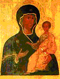

The Smolensk Icon of the Mother of God, called “Hodigitria,” which means “she who shows the way,” was, according to the tradition of the Church, painted by the holy Evangelist Luke during the earthly life of the Most Holy Theotokos. Saint Demetrius of Rostov supposes that this image was painted at the request of Theophilus, the ruler of Antioch. From Antioch the holy icon was carried to Jerusalem, and from there the empress Eudocia, wife of Arcadius, sent it to Constantinople to Pulcheria, the emperor’s sister, who set the holy icon in the church at Blachernae.
The Greek emperor Constantine IX Monomachos (1042—1054), giving his daughter Anna in marriage in the year 1046 to Prince Vsevolod Yaroslavich, son of Yaroslav the Wise, blessed her on her way with this icon. After the death of Prince Vsevolod the icon passed to his son Vladimir Monomakh, who at the beginning of the twelfth century brought it to the cathedral church of Smolensk in honor of the Dormition of the Most Holy Theotokos. From that time the icon received the name Hodigitria of Smolensk.
In the year 1238, at a voice from the icon, the selfless Orthodox warrior Mercurius made his way by night into the camp of Batu and struck down a multitude of the enemy, among them their mightiest warrior. Having received a martyr’s end in the battle, he was numbered by the Church among the saints (commemorated November 24).
In the fourteenth century Smolensk was in the possession of the princes of Lithuania. Sophia, the daughter of Prince Vitovt, was given in marriage to the Great Prince Basil Dimitrievich of Moscow (1398—1425). In 1398 she brought with her to Moscow the Smolensk Icon of the Mother of God. The holy image was set in the Cathedral of the Annunciation in the Kremlin, on the right side of the royal doors.
In 1456, at the request of the inhabitants of Smolensk headed by Bishop Misail, the icon was solemnly returned to Smolensk with a procession of the cross, while two copies of it remained in Moscow. One was placed in the Cathedral of the Annunciation, and the other — “measure for measure” — in 1524 in the Novodevichy Monastery, founded in memory of the return of Smolensk to Russia.
The monastery was built on the Maidens’ Field, where “with many tears” the people of Moscow had sent the holy icon off to Smolensk. In 1602 an exact copy was painted from the wonderworking icon (in 1666 the new copy was taken to Moscow together with the ancient icon for restoration), and it was placed in a tower of the Smolensk fortress wall, above the Dnieper Gates, beneath a canopy built especially for it. Later, in 1727, a wooden church was raised there, and in 1802 a stone one.
The new copy took on the grace-filled power of the ancient image, and when the Russian troops abandoned Smolensk on August 5, 1812, they took the icon with them for protection against the enemy. On the eve of the battle of Borodino this image was carried through the camp, to strengthen and hearten the soldiers for their great feat.
The ancient image of the Smolensk Hodigitria, brought for a time into the Dormition Cathedral, was carried on the day of the battle of Borodino, together with the Iveron and Vladimir Icons of the Mother of God, around the White City, Kitai-gorod, and the walls of the Kremlin, and was then sent to the sick and the wounded in the Lefortovo palace. Before the abandonment of Moscow the icon was taken to Yaroslavl.
Thus reverently did our forefathers guard these sister icons, and the Mother of God through Her images watched over our homeland. After the victory over the enemy the icon of the Hodigitria, together with the celebrated copy, was returned to Smolensk.
The celebration in honor of this wonderworking image on July 28 was established in the year 1525, in memory of the return of Smolensk to Russia.
There are many venerated copies of the Smolensk Hodigitria, for which a celebration is appointed on this same day. There is also a day of celebration for the Smolensk icon that became renowned in the nineteenth century — November 5, when this image, by order of the commander-in-chief of the Russian army M. I. Kutuzov, was returned to Smolensk. In memory of the driving out of the enemy from the Fatherland, it was established in Smolensk to celebrate this day every year.
The holy icon of the Mother of God the Hodigitria is one of the chief treasures of the Russian Church. The faithful have received and continue to receive from it abundant grace-filled help. The Mother of God through Her holy image defends and upholds us, guiding us on the way to salvation, and we cry out to Her: “Thou art for the faithful the All-good Hodigitria, thou art the Praise of Smolensk and the confirmation of all the Russian land! Rejoice, O Hodigitria, salvation of Christians!”